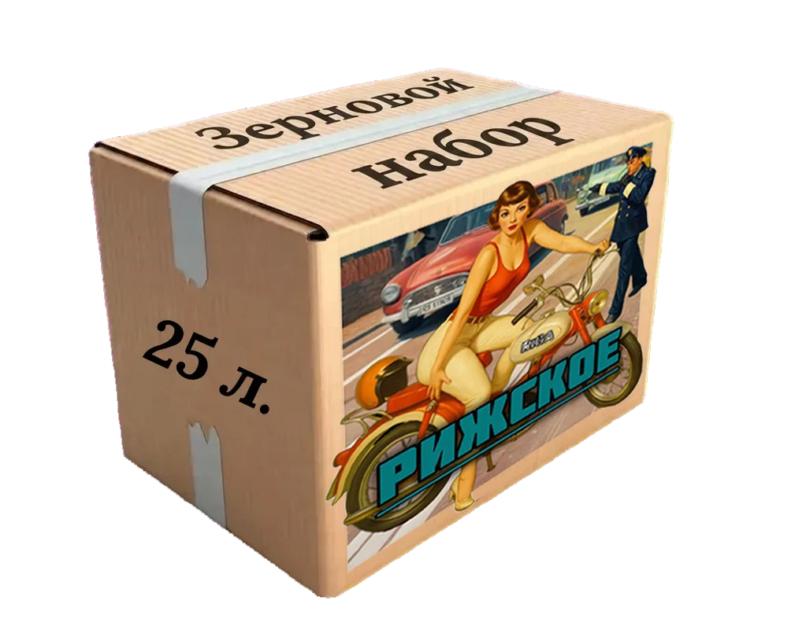
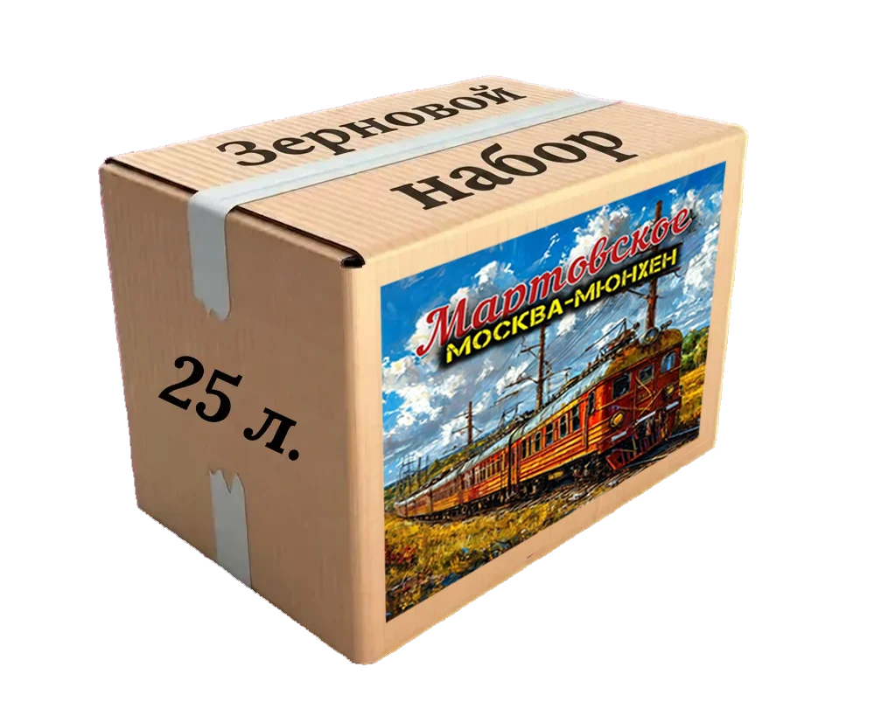
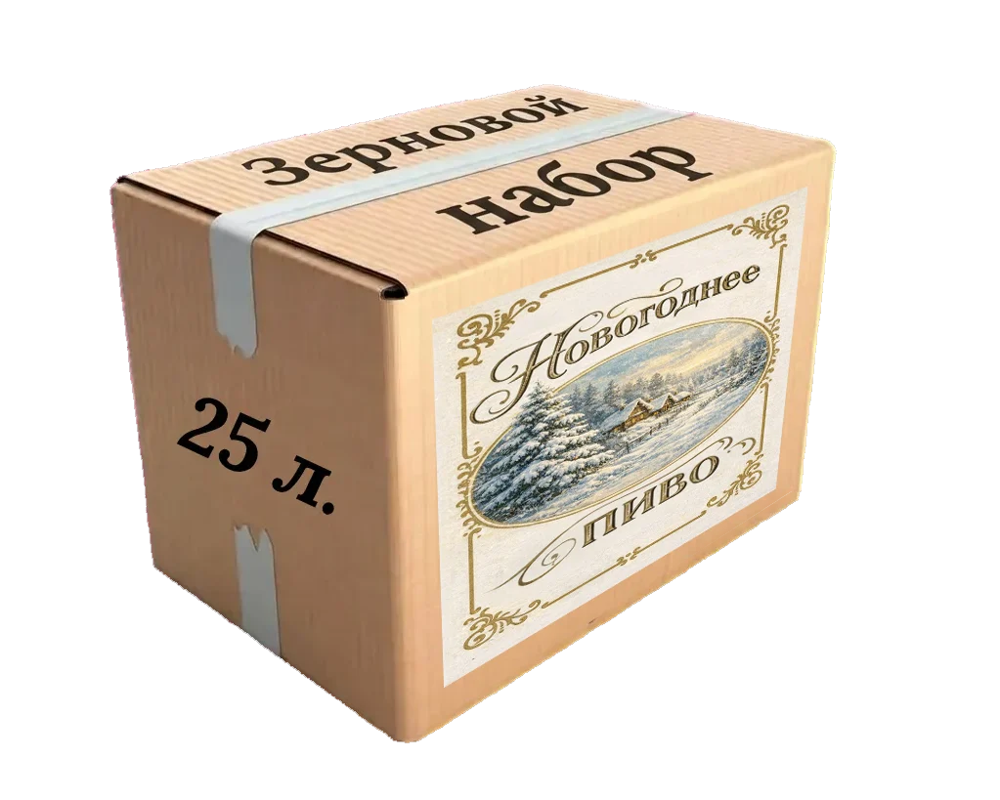
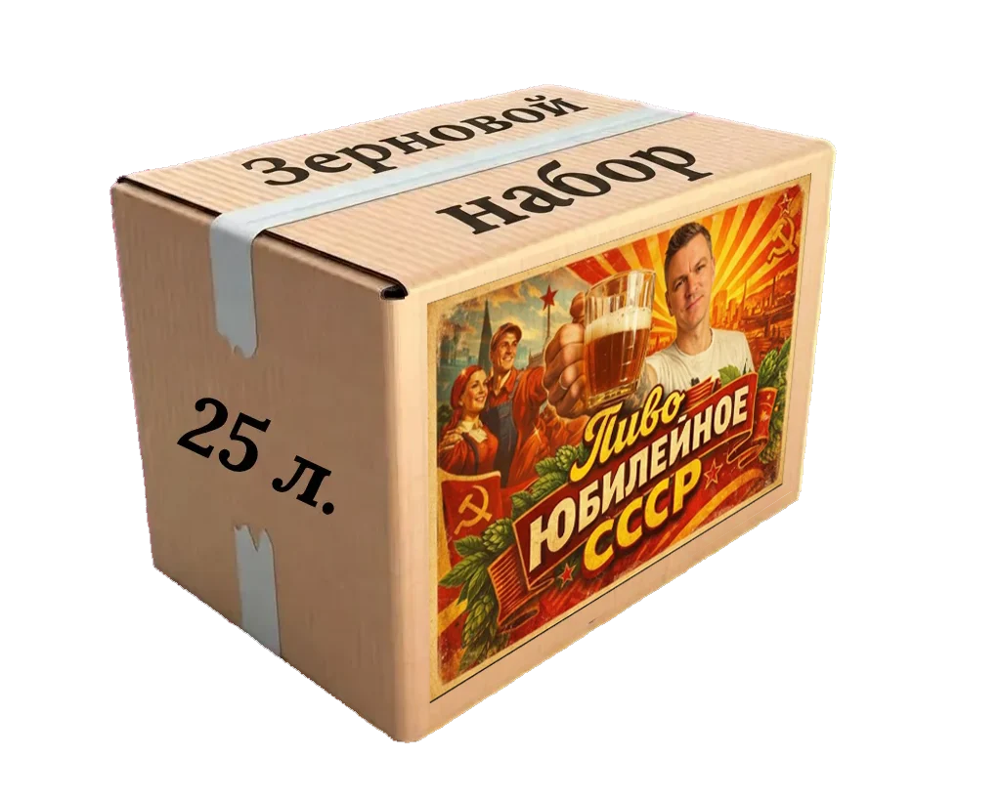
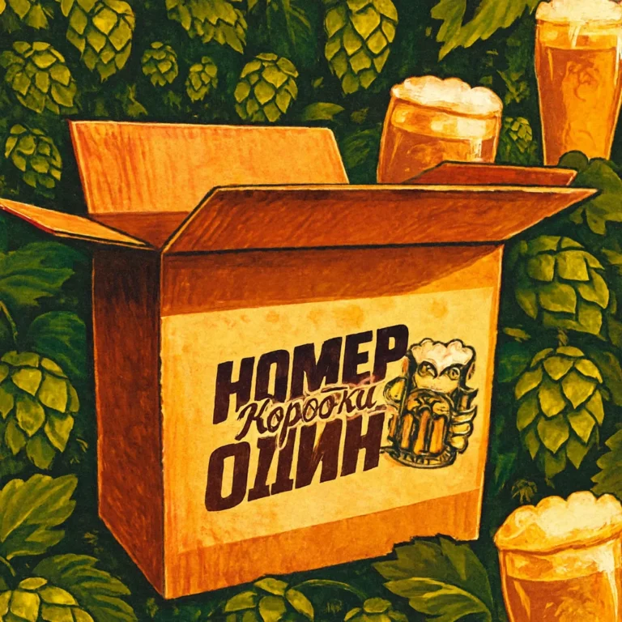
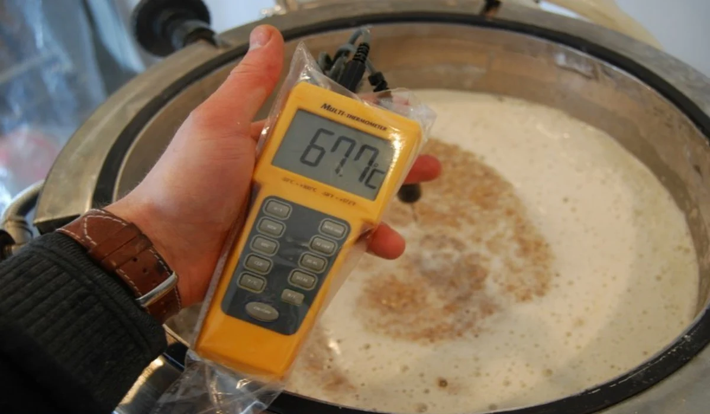

№ 01
Жигулевское
3 000 ₽▷ Видео
BODREEVSHOW — ЭКСПЕРТ ПО ПИВОВАРЕНИЮ
Пивоварение — это искусство.
Зерновые наборы, рецепты и вдохновение
для вашего собственного вкуса.
01 / ЗЕРНОВЫЕ НАБОРЫ








Ничего не найдено. Попробуйте другое название.

01БЕСТСЕЛЛЕР / КОРОБКА № 1
Внутри — ингредиенты для варки пива. А каким оно получится, решаете вы. Лёгким или крепким, горьким или ароматным: здесь нет единственного верного рецепта.
Инструкция подскажет направление. Вы выбираете свой путь.
02 / ПРАКТИКА И ВДОХНОВЕНИЕ
ДАЙДЖЕСТ / 01

ДАЙДЖЕСТ / 02

ДАЙДЖЕСТ / 03
ХОРОШАЯ МУЗЫКА ДЛЯ ХОРОШЕЙ ВАРКИ
03 / FAQ
Всё начинается с любопытства.
Один набор рассчитан на 25 литров готового пива. По договорённости можно собрать набор на другой объём.
Любой набор подходит и начинающим с минимальным оборудованием, и опытным пивоварам. Выбирайте по своим вкусовым предпочтениям.
На оригинальном сайте рекомендуется употребить пиво в течение 3–6 месяцев; при правильном хранении — до года.
В прохладном, сухом и тёмном месте, чтобы ингредиенты сохраняли качество.
Да. Состав подбирается исходя из ваших предпочтений по индивидуальной договорённости.
КОНТАКТЫ
Поможем выбрать набор, обсудим индивидуальный рецепт
и ответим на вопросы о домашнем пивоварении.
Или заходите в сообщество